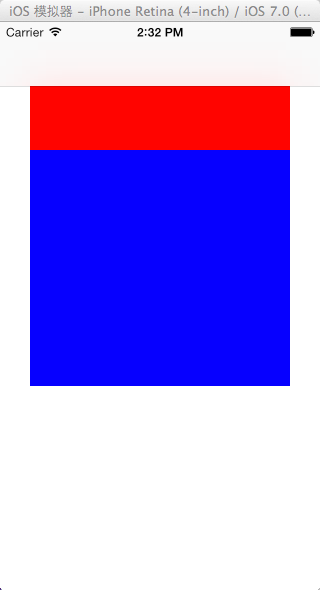

在 iOS 7 中，如果某个UIViewController的 self.view 第一个子视图是UIScollView， 同时当这个UIViewController被 push 或initWithRootController 成为UINavigationController控制的 Controller 时，这个UIViewControlle的 view 的子视图UIScollView的所有子视图， 都会被下移64px。
这个下移 64px 的前提是 navigationBar 和 statusBar 没有隐藏。因为为 statusBar 默认的 Height 是 20px，而 navigatiBar 默认的 Height 是 44px
实例：
1. 在 AppDelegate.m 文件中：
1 2 3 4 5 6 7 8 9 10 11
| - (BOOL)application:(UIApplication *)application didFinishLaunchingWithOptions:(NSDictionary *)launchOptions { self.window = [[UIWindow alloc] initWithFrame:[[UIScreen mainScreen] bounds]]; self.window.backgroundColor = [UIColor whiteColor]; //下面两行为增加的代码 ViewController *rootViewController = [[ViewController alloc] init]; [self.window setRootViewController:rootViewController]; [self.window makeKeyAndVisible]; return YES; }
|
2. 在 ViewController.m 中：
1 2 3 4 5 6 7 8 9 10 11 12
| - (void)viewDidLoad { [super viewDidLoad]; UIScrollView *scrollView = [[UIScrollView alloc] initWithFrame:CGRectMake(30.0, 64.0, 260.0, 300.0)]; [scrollView setBackgroundColor:[UIColor redColor]]; UIView *view = [[UIView alloc] initWithFrame:scrollView.bounds]; [view setBackgroundColor:[UIColor blueColor]]; [scrollView addSubview:view]; [self.view addSubview:scrollView]; }
|
3. 运行后的结果：
4. 现在使用 UINavigationController, 将开始 AppDelegate.m 增加的那两行代码修改成：
1 2 3
| ViewController *rootViewController = [[ViewController alloc] init]; UINavigationController *navController = [[UINavigationController alloc] initWithRootViewController:rootViewController]; [self.window setRootViewController:navController];
|
5. 现在再次运行程序：

依据结果显示， scrollView 背景色为蓝色的子视图位置自动下移了。 而这个下移的距离刚好是 64.0px
解决方法
1. 第一种：在 ViewController 的 init 的方法中增加一行代码：
1
| self.automaticallyAdjustsScrollViewInsets = NO;
|
2. 第二种： 让UIScrollView 不要成为 ViewController 的 View 的第一个子视图。具体操作：将 viewDidLoad方法 修改成如下：
1 2 3 4 5 6 7 8 9 10 11 12 13 14 15 16
| - (void)viewDidLoad { [super viewDidLoad]; UIView *firstSubView = [[UIView alloc] initWithFrame:self.view.bounds]; [self.view addSubview:firstSubView]; UIScrollView *scrollView = [[UIScrollView alloc] initWithFrame:CGRectMake(30.0, 64.0, 260.0, 300.0)]; [scrollView setBackgroundColor:[UIColor redColor]]; UIView *view = [[UIView alloc] initWithFrame:scrollView.bounds]; [view setBackgroundColor:[UIColor blueColor]]; [scrollView addSubview:view]; [self.view addSubview:scrollView]; }
|
3. 第三种：将 UIScorllView 的子视图上移 64.0px 。修改 viewDidLoad 方法：
1 2 3 4 5 6 7 8 9 10
| UIScrollView *scrollView = [[UIScrollView alloc] initWithFrame:CGRectMake(30.0, 64.0, 260.0, 300.0)]; [scrollView setBackgroundColor:[UIColor redColor]]; CGRect viewFrame = CGRectMake(0, -64.0, CGRectGetWidth(scrollView.frame), CGRectGetHeight(scrollView.frame)); UIView *view = [[UIView alloc] initWithFrame: viewFrame]; [view setBackgroundColor:[UIColor blueColor]]; [scrollView addSubview:view]; [self.view addSubview:scrollView];
|